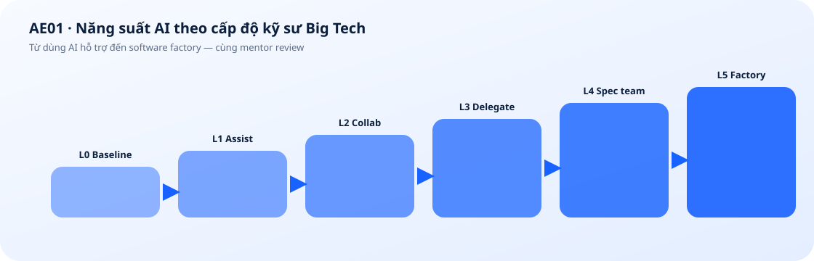

Prerequisites
Basic use of computers, files, and office applications. The non-technical track does not require programming. The technical track is for learners who can read and edit code.
Work with AI like an engineer at Big Tech.
Use AI to complete work and achieve measurable productivity gains. Practice with documents, tabular data, workplace information, and AI coding tools to create useful applications.

Basic use of computers, files, and office applications. The non-technical track does not require programming. The technical track is for learners who can read and edit code.
Identify tasks suitable for AI, collaborate and delegate at different autonomy levels, build utilities with AI coding, configure an agent team, run goal-driven workflows, and select a useful autonomy level for each task.
Technical and non-technical professionals: PMs, BAs, operations, marketers, knowledge workers, and developers.
Progress from L0 to L5 through personal assistance, collaboration, delegation, orchestration, and AI workflow operations.
| Level | Capability |
|---|---|
| L0 Baseline | Understand the current workflow and select a suitable problem |
| L1 AI Assistance | Use AI for small tasks and verify every output |
| L2 AI Collaboration | Provide context, discuss requirements, and refine results through checkpoints |
| L3 Task Delegation | Delegate a complete task and evaluate the resulting artifact |
| L4 Spec-Driven AI Team | Write acceptance criteria, configure roles and handoffs, and review plans and results |
| L5 Software Factory | Configure a workflow that implements, tests, packages, and handles exceptions |
| Week | Session 1 | Session 2 |
|---|---|---|
| 1 | S1, L0: Select a work task, record a baseline, and define completion criteria | S2, L1: Activate accounts, use AI for small tasks, and check for errors |
| 2 | S3, L2: Provide requirements, context, and examples; build a checkpoint-based collaboration workflow | S4, L2: Use AI coding to build a small document or data utility |
| 3 | S5, L2: Debug with AI, run business tests, and save versions | S6, L3: Turn requirements into a delegable task with artifacts and acceptance criteria |
| 4 | S7, L3: Build a custom harness with instructions, context, skills, templates, tools, and tests | S8, L3: Let an agent complete an independent task in an isolated workspace |
| 5 | S9, L3: Review the result, test missing-data cases, and revise the configuration | S10, L4: Write acceptance criteria and configure an agent team, handoff contracts, and workspaces |
| 6 | S11, L4: Review the plan and ask the agent team to implement the specification | S12, L4: Verify independently and compare with a single agent |
| 7 | S13, L5: Configure a software factory to accept specs, build or update utilities, test, and package | S14, L5: Run a new requirement end to end with permission, budget, and failure limits |
| 8 | S15, L5: Audit autonomy, review time, quality, cost, and productivity trade-offs | S16, L5: Unguided capstone, defend the evidence, and select a practical adoption level |
A paid AI seat for two months, a workspace for running utilities, templates, API quota, and setup support.
Utilities, harnesses, orchestration logs, an L0–L5 record, and a productivity report.